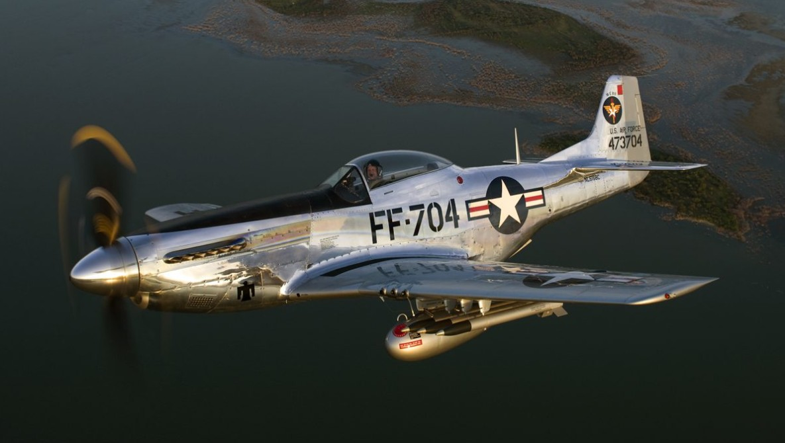

País: Estados Unidos
Tipo: Caça / Caça-escolta de longo alcance
Fabricante: North American Aviation
Ano: 1940
Velocidade máxima: 703 km/h
Alcance: 2.755 km (com tanques externos)
Teto de serviço: 12.800 m
O P-51 Mustang foi o mais famoso caça americano da Segunda Guerra Mundial. Projetado em apenas 102 dias, tornou-se peça fundamental da estratégia aliada ao escortar bombardeiros pesados em missões de longo alcance até o coração da Alemanha.